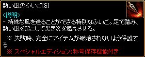
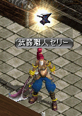
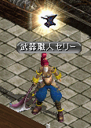

錬成・封印解放システム
「錬成」とはユニークアイテムの性能を更に強化する事でより強力な「Nxユニークアイテム」を作り出すシステムです。
「Nxユニークアイテム」はユニークアイテムの基本性能が更にパワーアップしたアイテムです。
材料を集め、専用のNPCに渡す事で錬成を行なえます。
錬成時注意点
* 対象はU/DXU/UMU等級の補助武器・刻印指等を除いた「錬成可能」と表記のあるユニークアイテムです。* 錬成されたアイテムは鏡の魔法書が使用不可になります。
* 図案書効果は削除されます。
* 手順次第ではアイテムが完全に破壊される・オプションが削除される可能性があるため、使用アイテムにミスがないよう注意。
材料
手順
特殊アイテム
補足
材料
| 本体Lv-100以上のモンスターからドロップ |
|
| 本体Lv-100以上のモンスターからドロップ |
|
 |
1日クエスト報酬 |
 |
鍛冶屋のハンマー/匠のハンマー/氷のハンマー より作成 または 地下界からの使者クエスト報酬 |
| 古都ブルンネンシュティグ 武器職人タポ(100,51)よりNxユニークアイテム分解 または 古都ブルンネンシュティグ ランディス(110,58)より黒き炎の欠片500個と交換 |
|
| 古都ブルンネンシュティグ 武器職人サナ(98,53) または漆黒の城 リュラン(264,190)より作成 発火石 60個 断熱石 60個 神秘の石 6個 結晶石 3個 黒き炎の欠片 20個 100万G ※炎の石作成の成功確率:50% |
|
| 古都ブルンネンシュティグ 武器職人サナ(98,53) または漆黒の城 リュラン(264,190)より作成 発火石 100個 断熱石 100個 神秘の石 10個 結晶石 5個 黒き炎の欠片 50個 100万G ※炎の石作成の成功確率:100% |
|
| 古都ブルンネンシュティグ 武器職人サナ(98,53) または漆黒の城 リュラン(264,190)より作成 発火石 30個 断熱石 30個 神秘の石 3個 結晶石 2個 黒き炎の欠片 50個 1000万G ※炎の石作成の成功確率:50% |
|
| 古都ブルンネンシュティグ 武器職人サナ(98,53) または漆黒の城 リュラン(264,190)より作成 炎の石 3個 100万G 錬成失敗時のアイテム完全破壊を防止 |
|
| 古都ブルンネンシュティグ 武器職人サナ(98,53) または漆黒の城 リュラン(264,190)より作成 炎の石 4個 共鳴石 1個 100万G 錬成失敗時のアイテム完全破壊を防止 封印されたオプションの付加確率が上昇 |
|
| 古都ブルンネンシュティグ 武器職人サナ(98,53) または漆黒の城 リュラン(264,190)より作成 炎の石 8個 共鳴石 2個 100万G 錬成の成功確率100％ 封印されたオプションの付加確率が上昇 |
|
|  |
錬成失敗時のアイテム完全破壊を防止 ユニークアイテムのオプション引継ぎが可能 |
| 錬成失敗時のアイテム完全破壊を防止 封印されたオプションの付加確率が上昇 ユニークアイテムのオプション引継ぎが可能 |
|
| 錬成の成功確率100％ 封印されたオプションの付加確率が上昇 ユニークアイテムのオプション引継ぎが可能 |
|
| 錬成の成功確率100％ 高確率で封印されたオプション4個が付加 （最低でも3スロットは追加されます。） ユニークアイテムのオプション引継ぎが可能 |
|
| 古都ブルンネンシュティグ 武器職人サナ(98,53) または漆黒の城 リュラン(264,190)より交換 炎の石 10個 |
|
| 取引可能な錬成剤 |
|
| 古都ブルンネンシュティグ 武器職人サナ(98,53) または漆黒の城 リュラン(264,190)より交換 炎の石 1個 または 金のインゴット 50本 |
|
| 古都ブルンネンシュティグ 武器職人サナ(98,53) または漆黒の城 リュラン(264,190)より交換 炎の石 5個 |
|
| 古都ブルンネンシュティグ 武器職人サナ(98,53) または漆黒の城 リュラン(264,190)より交換 封印解放道具箱 1個 炎の石 5個 共鳴石 3個 100万G 解放失敗時のアイテム完全破壊を防止 |
手順
   |
古都ブルンネンシュティグ 武器職人サナ(98,53)または、冒険家協会ブルンネンシュティグ本部 武器職人セリー(64,21)にて、錬成を行うことができる。 |
|
錬成を依頼する を選択 |
|
| 漆黒の城 リュラン(264,190)でも、錬成を行うことができる。 |
|
| 内容は武器職人サナと同様 |
|
| 素材はフォームガード 錬成できるアイテムには基本情報欄に 「錬成 可能」の表示がある。 |
|
|
フォームガード 揮発性の炎の錬成剤 神秘のふいご[S] をセット ふいごなしでも錬成はできるが、錬成失敗時にアイテムが完全破壊される場合がある。 ふいご[S]を使用しない場合、スーパーユニークアイテムのオプションは消滅する。 |
|
| 神秘のふいご[S]を使用しているため、 錬成の成功確率100％。 スーパーユニークアイテムのオプションも引継がれる。 |
|
 |
錬成開始 |
| 錬成成功 |
|
| 錬成に成功するとNxユニークとなり、 基本能力が上昇 ユニークアイテムは要求Lvが上昇 （DXユニークは変わらない） 補正値が変動 封印されたオプションがランダムで 0～4個付加される。 フォームガード[Nx]の場合、 CP獲得ボーナス 25％ → 30％ 要求Lv 71 → 142 |
|
| 封印されたオプションが2個しか付加されなかったため、再錬成を行う。 武器職人サナまたはリュランに再錬成を依頼 フォームガード[Nx] 再錬成剤 をセット |
|
| 再錬成は必ず成功 |
|
| 再錬成すると錬成可能なユニークアイテムに戻り、補正値が変動。 スーパーユニークアイテムのオプションは変化なし。 |
|
| 錬成・再錬成を繰り返して、 封印されたオプション4個が付加した Nxユニークが完成。 0～4個の封印解放スロットが生成されます。 上から順番に解放できます。 |
|
| 特製封印解放道具箱を使用して、 封印されたオプションを解放する。 封印解放箱を所持していれば任意のマップで使用可能。 |
|
| 氷のハンマー/氷の鉄床/氷の砥石より1つ選択。 成功確率はオプション解放数によって異なります。 概ね以下程度の確率。 １段階目チャレンジ：33% ２段階目チャレンジ：25% ３段階目チャレンジ：15% ４段階目チャレンジ：10% 完全特製封印解放道具箱の場合は 1～4スロットが必ず解放されます。 (1解放50%、2解放30%、3解放20%、４解放10%程度) |
|
| 特製封印解放道具箱を使用しているため、 解放失敗時のアイテム完全破壊を防止。 特製封印解放道具箱・改の場合は加えて 解放失敗時のスロットリセット(0解放に戻る)も防止します。 |
|
| 封印解放道具箱を使用した場合は、解放失敗時にアイテムが完全破壊される場合がある。 (16%程度の確率でアイテム完全破壊) |
|
| 解放成功 |
|
| 1個目の封印されたオプションが解放。 封印されたオプションは上から1個ずつしか解放できない。 フォームガード[Nx]の場合、 要求Lv 142 - 40 = 102 |
|
| 解放2回目 |
|
| 解放失敗 |
|
| 解放に失敗すると、錬成オプションは全て初期化され、封印されたオプションに戻る。 通常の封印解放道具箱を使って 封印されたオプションを4個全て解放したNxユニークを作るには、4回連続で解放に成功する必要あり。 |
ロト等から入手可能なアイテム
 |
スロット再錬成道具箱 封印されたオプション(スロット)を0～4に再設定できます。 既に解放されたオプションは消滅するため注意。 ロトボックスや各種イベントで入手可能。 0～2スロットが出やすく、3,4スロットは出にくい。 |
 |
特製封印解放道具箱・改 特製封印解放道具箱と違い、既に解放したオプションは失敗時にも維持されます。 成功時は封印されたオプションが1つ解放。 |
 |
完全封印解放道具箱 1個～4個の封印されたオプションを解放可能。 スロットの空きがない場合はそれ以上解放されません。 2個解放された状態から再度1解放に戻ることもあります。 |
補足
・Nxユニークアイテムはモンスターからもドロップします。
・ドロップしたNxユニークアイテムには、封印されたオプションがランダムで0～4個付加されている。解放は別途必要。
・NxDXユニークはドロップしないため、錬成で作成。
（DropLvの設定ミスと思われる以下のNxDXユニークはドロップすることも。）
カルボナーラツイスト[Nx] <DropLv/係数>95/1000
毒性クラゲ[Nx] <DropLv/係数>295/1000
黒魔術の呪い[Nx] <DropLv/係数>341/1000
カタリナ卿の威厳[Nx] <DropLv/係数>372/150
ゴッドマザー[Nx] <DropLv/係数>316/800
ブラックラベル[Nx] <DropLv/係数>372/150
・錬成可能なユニークアイテムは、通常のユニーク/インフィニティ武器8～10/賭博師武器など「錬成 可能」と表示されているアイテム。
・錬成不可能なユニークアイテムは、インフィニティ武器1～7/朱洛星シリーズ/クロネの指輪/ニケの靴/ジェーソンの革の帽子/ハーソンのバンダナ/弾/矢/盾など。
・錬成するとユニークアイテムは要求Lvが上昇、DXユニークは変わらない。
・錬成・再錬成時には、補正値が変動。
(例, 女神の息吹 異常状態抵抗 最高補正45％→錬成・再錬成後 20~45％に変動)
・再錬成時にはアイテムに付与されたオプションが引き継がれます。
・Nxユニークアイテムは、エンチャント/神秘鏡/魔力抽出機/異次元が可能。 ・鏡の魔法書は使用不可。
・錬成したNxインフィニティ武器は強化不可。
・錬成したNx爪は闘士も装備可能。